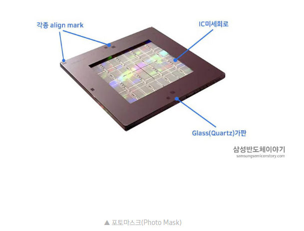
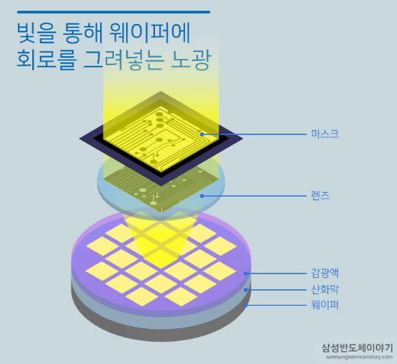
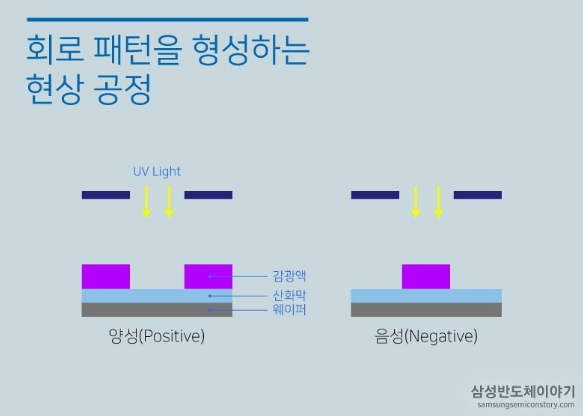

1. 개요
- 산화공정 이후의 Wafer에 반도체 회로를 그려 넣는 공정
- Wafer 위에 회로 패턴이 담긴 마스크 상을 빛을 이용해 비춰 회로를 그리는 공정
- 패턴 형성 방식은 사진 인화 과정과 유사함
- 집적도가 증가할수록 미세 공정 필요
-
미세 회로 패턴 구현은 포토 공정에 의해 결정됨
집적도가 높아질수록 포토 공정 기술 수준도 함께 요구됨
2. 전체 공정 흐름
① 회로 설계
- CAD를 이용해 Wafer에 그려 넣을 회로 설계
- 설계 정밀도가 반도체 집적도에 직접적인 영향
② 포토마스크 제작

- 석영 기판 위에 크롬으로 회로 형성
- Reticle이라고도 불림
- 회로보다 크게 제작 후 축소 노광
-
국내 주요 업체
Blank Mask: S&S TECHPhoto Mask: S&S TECH, FSTPellicle: FST
③ 감광액 도포

- Wafer 표면에 Photo Resist 도포
- 균일하고 얇은 막 형성이 중요
④ 노광

- 마스크 패턴을 빛으로 Wafer에 전사
- EUV 장비 대표 기업: ASML
⑤ 현상

- 노광된 영역 선택 제거
- 패턴 형상이 결정되는 핵심 단계
⑥ 검사
- 광학 장비로 패턴 검사
- 결함 검출 및 품질 확인